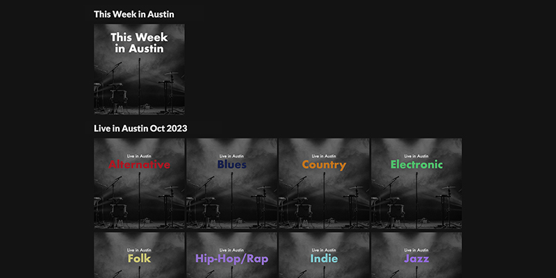

Drivetone

Oct 2023
https://pages.bradleyoesch.com/drivetone
I wanted to see more live music so I thought it would be cool to find all the musicians playing in Austin and group them by month and genre and create playlists so I could find new artists and see them live. Then covid happened and I didn’t bother for about three years... Went to a couple concerts recently and had a great time so went back to this and finished up an MVP.
Currently there are two kinds of playlists:
- Playlists for each month and each genre, to find new artists by genres
- A running playlist for the "current week", to find new artists playing live this week
At this point Spotify has already integrated live concerts in some way, so it's not like these are some groundbreaking ideas, but I enjoyed making it and making something for myself!
This was built in Node.js and integrates with Spotify through spotify-web-api-node.
Scraper News
Nov 2014 - Mar 2022
https://twitter.com/ScraperNews
I realized that when I went to Hacker News I would scan the page and click on titles I found interesting that also had a lot of comments, because to me that signaled that the content itself generates discussion, rather than the number of votes, which signals an attention-grabbing title. I built a Twitter bot to scrape the front page of Hacker News and tweet out any stories that have at least 70 comments. I now go to Scraper News instead of Hacker News because it condenses the information down to the most talked about articles, plus I can catch up on days I missed.
This was built in python, using the Scrapy and Twython libraries, and is hosted on this server through Digital Ocean. The scraper runs every 15 minutes with a cron job.
Apparel Mockup
Jan 2011
http://apparelmockup.bigcartel.com/
In high school I spent a lot of time on a now defunct tee design forum (Emptees and saw that many designers were either using poorly made or expensive shirt mockups. I decided to make my own high quality mockups with pictures I took, and sold them through an online marketplace. I have enjoyed a small, consistent stream of orders each month that over the last several years has resulted in a nice amount of extra money (that I now throw away on Ubers). Recently I have begun to accept custom mockup orders, where I create a mockup based on a client's own photography for their personal or commercial use.
These were made in Photoshop, with pictures taken way back before iPhone cameras were good.